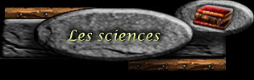
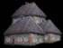

| 15 | 1 479 803 | 107 735 | 131 808 | 2 112 | 88 |

Mon seigneur Yvain, l'apprentissage et l'exploration du savoir peut être un élément vital pour la progression de votre seigneurie.
Voici les niveaux de connaissances atteints par votre seigneurie dans les différents domaines du savoir. Chaque science possède 30 niveaux sauf pour les races ayant des avantages ou désavantages dans ce domaine.
Vos sciences
 Démographie | Votre niveau 2 en démographie augmente de 2 % votre population | Coût: 600 000 or |
Tactique | Votre niveau 3 en tactique augmente de 3 % votre force d’attaque | Coût: 1 science gratuite |
Logistique | Votre niveau 5 en logistique augmente de 7,5 % la vitesse de vos attaques | Coût: 1 science gratuite |
Ballistique | Votre niveau 6 en ballistique augmente de 12 % la force de vos armes de siège | Coût: 1 science gratuite |
Mysticisme | Votre niveau 5 en mysticisme augmente de 15% la résistance de votre mage contre la magie | Coût: 1 science gratuite |
Furtivité | Votre niveau 3 en furtivité augmente de 6 % l’efficacité de vos voleurs | Coût: 1 science gratuite |
Commerce | Votre niveau 2 en commerce augmente de 4 % vos revenus | Coût: 1 science gratuite |
Agriculture | Votre niveau 4 en agriculture augmente de 12 % la production de vos fermes | Coût: 1 science gratuite |
Ébenisterie | Votre niveau 5 en ébénisterie augmente de 20 % la production de vos scieries | Coût: 1 science gratuite |
Ingénierie | Votre niveau 1 en ingénierie augmente de 3% la production de vos ateliers | Coût: 1 science gratuite |